Anniskelupassikoe suomeksi
Harjoittele anniskelupassikoetta: kysymykset selityksineen, koeharjoitus sekä ikärajat, anniskeluajat ja vahvuudet – suomeksi ja ilman nettiä.
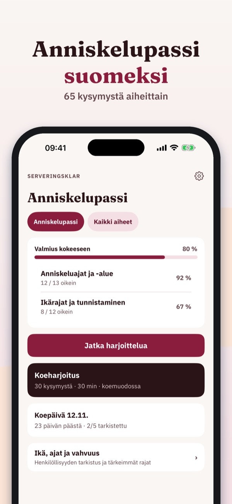
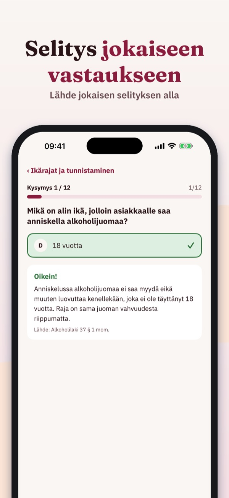
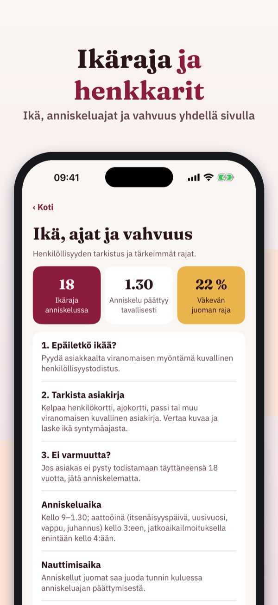
Serveringsklar auttaa harjoittelemaan anniskelupassikoetta – aiheittain, selitys jokaiseen kysymykseen.
• Kysymykset aiheittain, selitys jokaiseen vastaukseen
Voit harjoitella 20 kysymystä, sanastoa ja tarkistuslistaa ilman ostoa. Täysi versio on kertaosto, joka avaa kaikki kysymykset, koeharjoitukset ja tilastot. Ei tilausta.
Serveringsklar on itsenäinen eikä liity Lupa- ja valvontavirastoon, muihin viranomaisiin tai kokeen järjestäjiin. Kokeen teet hyväksytyllä järjestäjällä.
Terms of Use (EULA): https://www.apple.com/legal/internet-services/itunes/dev/stdeula/
Privacy: https://baytechbv.github.io/privacy/alkohol-servering-eu/
Øv til kunnskapsprøven
Øv til kunnskapsprøven etter alkoholloven: spørsmål med forklaring, prøvetester og regler for alder, tider og styrke – på norsk og uten nett.
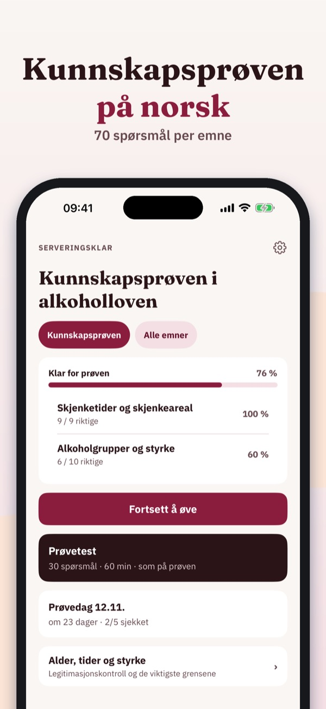
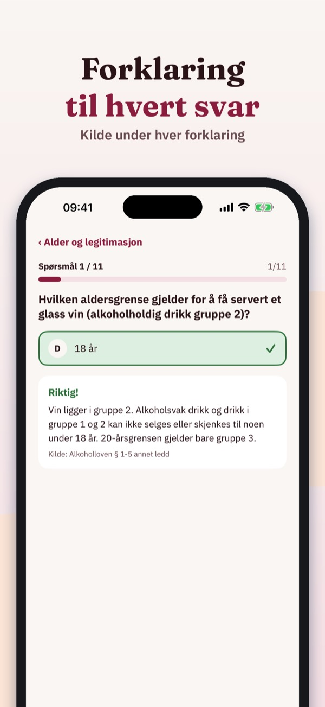
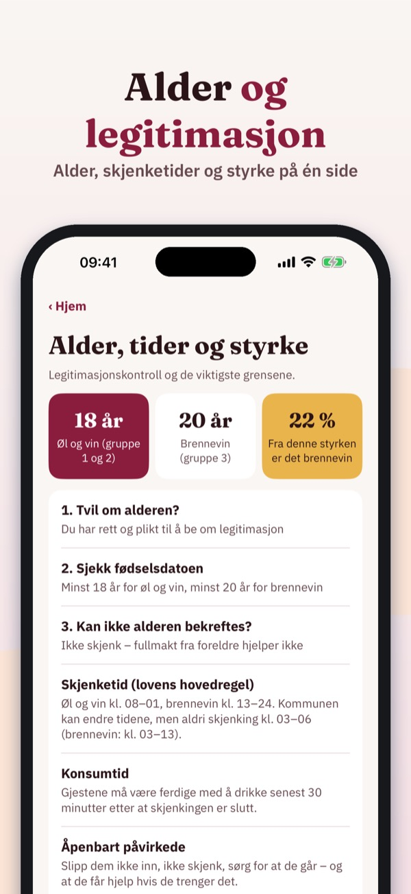
Serveringsklar hjelper deg å øve til kunnskapsprøven etter alkoholloven – for styrer og stedfortreder ved skjenkested.
• Spørsmål per emne med forklaring til hvert svar
Du kan øve på 20 spørsmål, ordlisten og sjekklisten uten kjøp. Fullversjonen er et engangskjøp som låser opp alle spørsmål, prøvetester og statistikk. Ingen abonnement.
Serveringsklar er uavhengig og ikke tilknyttet kommunen eller andre myndigheter. Prøven avlegger du hos prøvearrangøren.
Terms of Use (EULA): https://www.apple.com/legal/internet-services/itunes/dev/stdeula/
Privacy: https://baytechbv.github.io/privacy/alkohol-servering-eu/
Ansvarsfull alkoholservering
Öva ansvarsfull alkoholservering och kunskapsprovet för serveringstillstånd: frågor med förklaring, övningsprov och regler för ålder och tider.
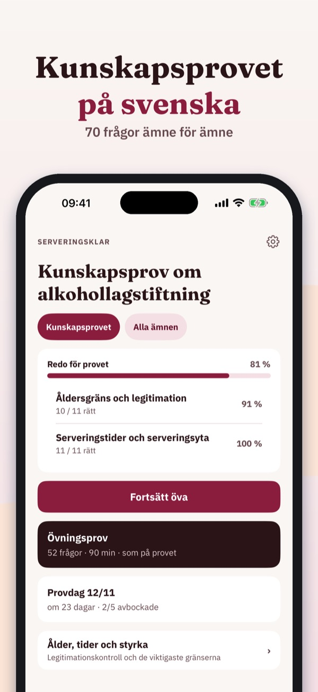
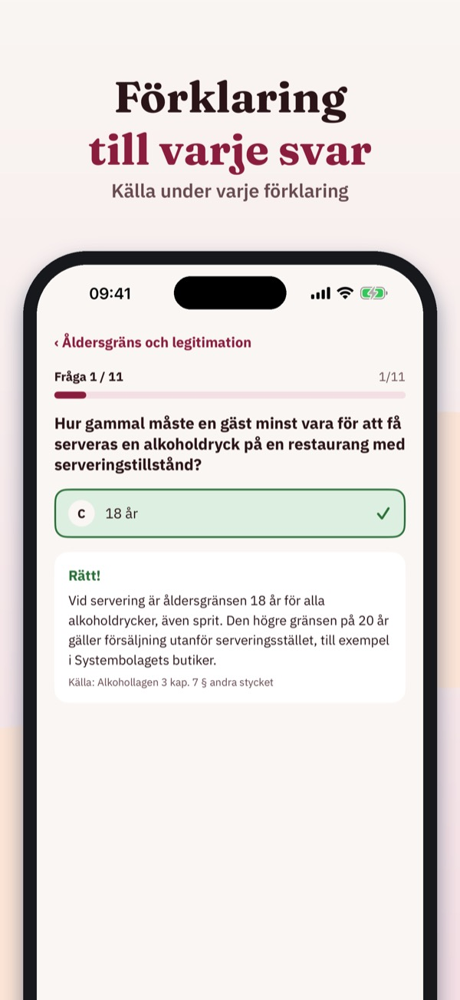
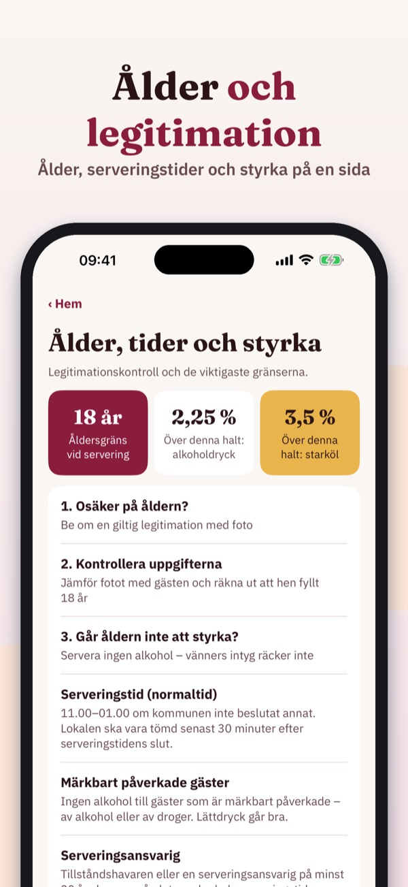
Serveringsklar hjälper dig att öva alkohollagens regler – för ansvarsfull alkoholservering och kunskapsprovet för serveringstillstånd.
• Frågor per ämne med förklaring till varje svar
Du kan öva 20 frågor, ordlistan och checklistan utan köp. Fullversionen är ett engångsköp som låser upp alla frågor, övningsprov och statistik. Ingen prenumeration.
Serveringsklar är fristående och inte kopplad till Folkhälsomyndigheten, kommunen eller någon utbildare.
Terms of Use (EULA): https://www.apple.com/legal/internet-services/itunes/dev/stdeula/
Privacy: https://baytechbv.github.io/privacy/alkohol-servering-eu/
Oefen voor Sociale Hygiëne
Oefen voor het examen Sociale Hygiëne: vragen met uitleg, proefexamens en de regels voor leeftijd, legitimatie en tijden – in het Nederlands.
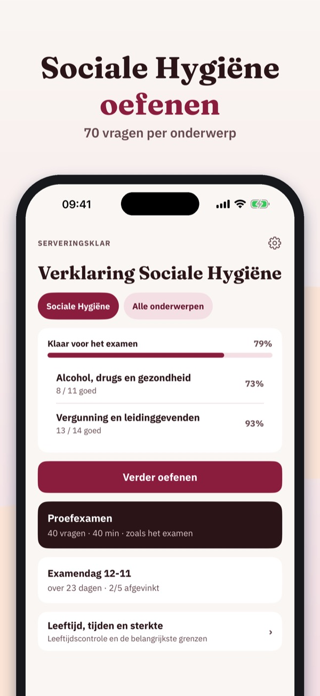
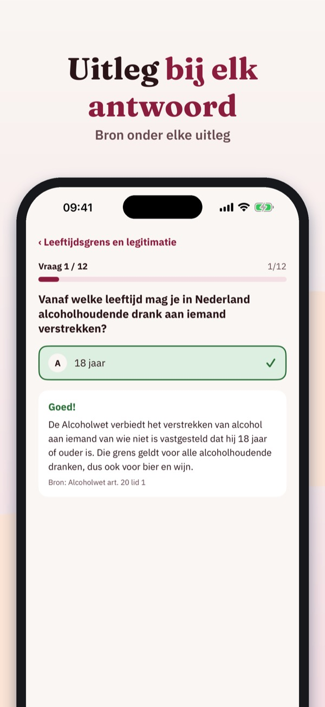
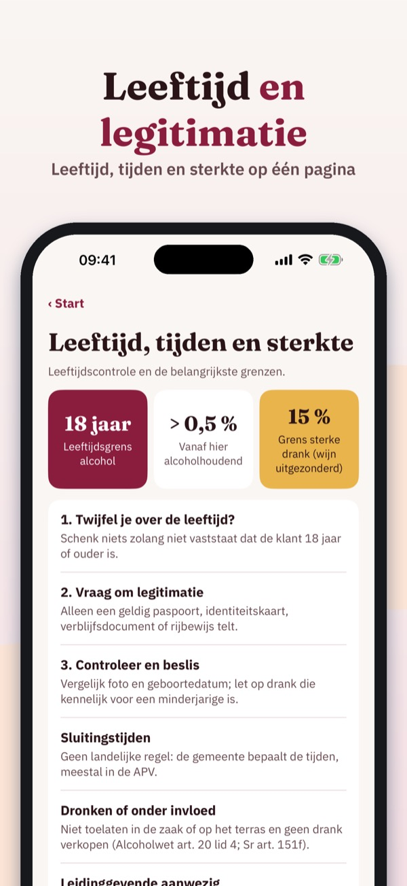
Serveringsklar helpt je oefenen voor het examen Sociale Hygiëne – met uitleg bij elke vraag, voor leidinggevenden in de horeca.
• Vragen per onderwerp met uitleg bij elk antwoord
Je kunt 20 vragen, de begrippenlijst en de checklist zonder aankoop gebruiken. De volledige versie is een eenmalige aankoop die alle vragen, proefexamens en statistiek ontgrendelt. Geen abonnement.
Serveringsklar is onafhankelijk en niet verbonden aan de overheid of een examenorganisatie. Je examen doe je bij een examenorganisatie.
Terms of Use (EULA): https://www.apple.com/legal/internet-services/itunes/dev/stdeula/
Privacy: https://baytechbv.github.io/privacy/alkohol-servering-eu/